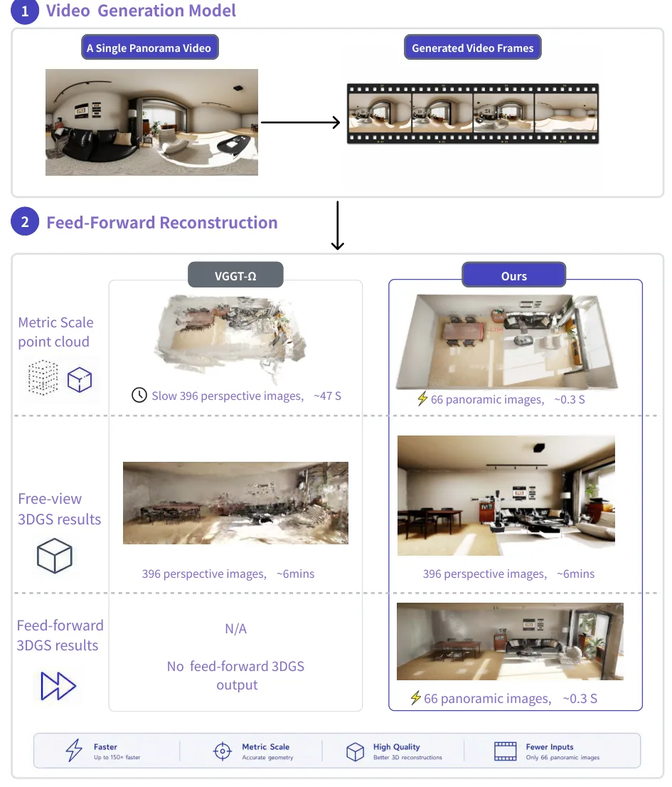
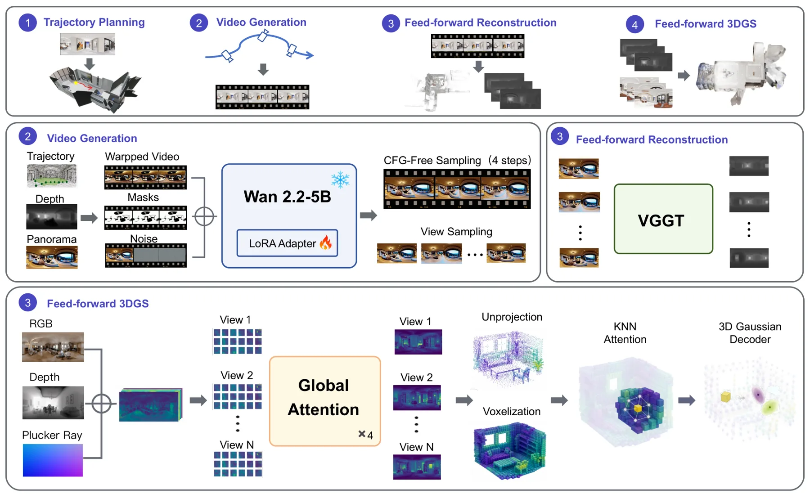
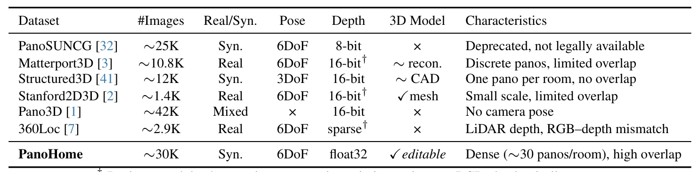

Genie Sim PanoWorld：从单张全景生成可漫游室内 3D 世界Genie Sim PanoWorld: An Infinite Indoor 3D World Generation Pipeline via Panoramic Scene Modeling and Simulation
生成与重建之间有明确轨迹接口，对 embodied simulation asset 有启发；不可见区域依赖生成，不能作为测量级几何，metric consistency 需验证。
一句话工作总结
从单张全景按可控 SE(3) 轨迹生成视频，再前馈重建可实时漫游的 3D Gaussian 仿真场景。
摘要
Genie Sim PanoWorld 从单张 360° panorama 生成高保真、可自由导航的室内三维场景，无需逐场景优化或多视图采集。第一阶段把 NavMesh-planned SE(3) trajectory 通过 dense geometry-warped conditioning 注入 latent video diffusion model，并以 long-short mixed training 和 self-consistency objective 在四步 CFG-free denoising 中生成可控 panoramic video；第二阶段以前馈 panoramic reconstructor 将视频提升为可实时漫游、可用于 embodied AI 仿真的 3D Gaussian scene。摘要称两阶段均优于 geometry-conditioned baselines，并能 zero-shot 泛化。
We address the problem of reconstructing a high-fidelity, freely navigable 3D scene from a single $360^\circ$ panorama, without per-scene optimization or multi-view capture. Existing methods either lack metric trajectory control, which hinders reliable downstream 3D reconstruction, or struggle with large disocclusions under long-range camera motion while requiring high-end multi-GPU servers.We present Genie Sim PanoWorld, a two-stage feed-forward pipeline that bridges generation and reconstruction via an explicit, trajectory-controllable panoramic video. A NavMesh-planned $\mathrm{SE}(3)$ roaming trajectory is injected into a latent video diffusion model through dense geometry-warped conditioning; long--short trajectory mixed training and a self-consistency objective based on shortcut models together yield high-fidelity video in four CFG-free denoising steps. A feed-forward panoramic reconstructor then lifts the generated video into a high-fidelity 3D Gaussian scene that supports real-time, free-viewpoint roaming and can be directly used as a simulation-ready asset for embodied AI applications. Experiments show that Genie Sim PanoWorld outperforms geometry-conditioned baselines in both panoramic video generation and downstream 3D reconstruction, while generalizing zero-shot to unseen indoor scenes.
中文解读摘录
- 作者：Yongxin Su, Linjie Hou, Feng Wang, Jialin Tang, Zhijun Li, Qian Wang, Maoqing Yao
- 价值判断：由 NavMesh 规划 SE(3) roaming trajectory，先生成显式可控 panoramic video，再前馈提升为可实时漫游的 3D Gaussian scene，为 embodied AI simulation asset 提供单视图生产链。
- 结果与边界：摘要称视频生成和下游重建优于 geometry-conditioned baselines，并可 zero-shot 泛化；但单视图不可观区域本质上是生成内容，不应视作测量级 reconstruction。需检查 metric consistency、碰撞几何和长轨迹漂移。
- 链接：arXiv · PDF
图表/页面预览
{kind=link}

{kind=link}

{kind=link}
